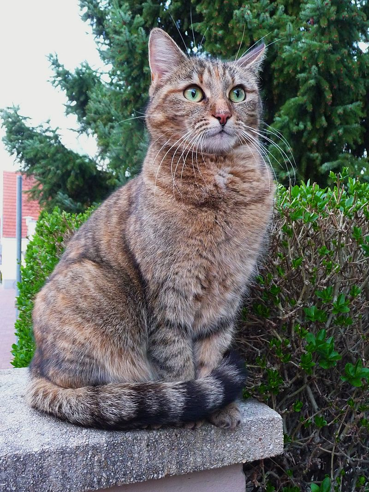

Hallo, dies ist eine Testseite.

„Grüne Augen einer Katze“ von 4028mdk09 - Eigenes Werk. Lizenziert unter CC BY-SA 3.0 über Wikimedia Commons - https://commons.wikimedia.org/wiki/File:Gr%C3%BCne_Augen_einer_Katze.JPG#/media/File:Gr%C3%BCne_Augen_einer_Katze.JPG